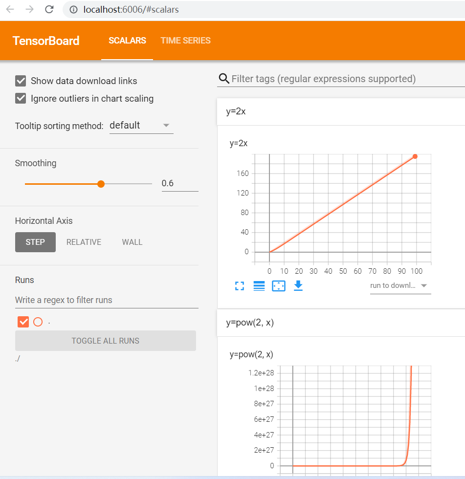
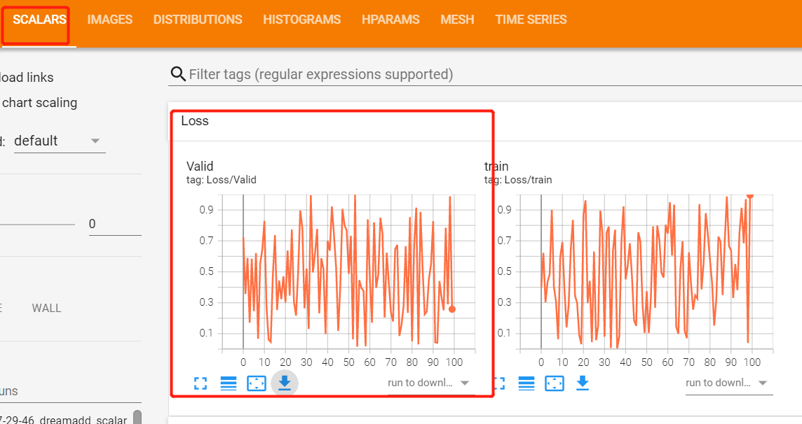
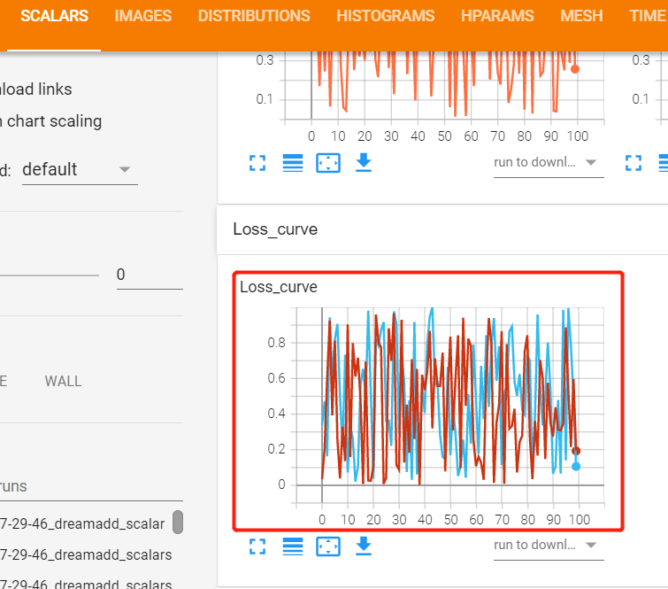
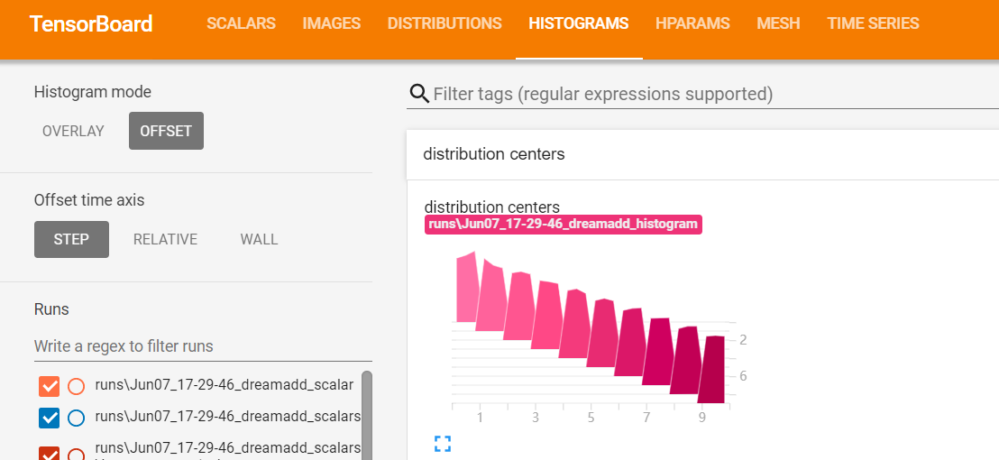
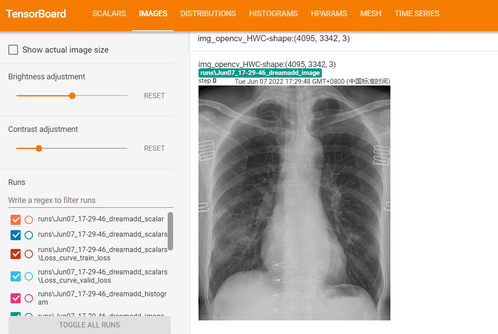
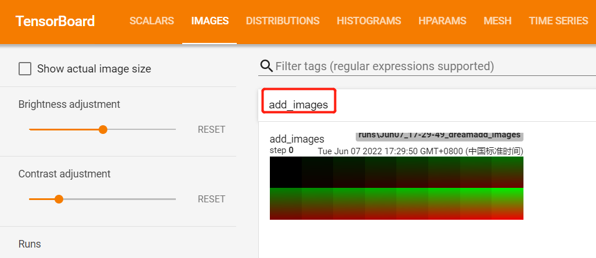

6.1 Tensorboard 基础与使用
Tensorboard是TensorFlow中提供的可视化工具，它能可视化数据曲线、模型拓扑图、图像、统计分布曲线等。
在PyTorch中，早期是不支持Tensorboard，采用了TensorboardX作为替身，现在PyTorch已经支持Tensorboard的使用，本节就介绍Tensorboard工具的概念、原理以及使用方法。
tensorboard 安装
首先运行以下代码，观察报错，通过报错信息指引我们安装tensorboard。
import os
BASE_DIR = os.path.dirname(os.path.abspath(__file__))
from torch.utils.tensorboard import SummaryWriter
log_dir = BASE_DIR # 即test_tensorboard.py文件所在目录
writer = SummaryWriter(log_dir=log_dir, filename_suffix="_test_tensorboard")
# writer = SummaryWriter(comment="test01", filename_suffix="_test_tensorboard")
x = range(100)
for i in x:
writer.add_scalar('y=2x', i * 2, i)
writer.add_scalar('y=pow(2, x)', 2 ** i, i)
writer.close()
直接运行代码,提示：
import tensorboard ModuleNotFoundError: No module named 'tensorboard'
只需要在命令窗口中执行：
pip install tensorboard
重新运行代码，获得event file文件，《events.out.tfevents.1654508983.dream.5756.0》
tensorboard 初体验
通过以上步骤得到了一个event file 文件，下面需要启动tensorboard软件对event file文件进行可视化。
tensorboard基本原理是这样的
python代码中将可视化的数据记录到event file中，保存至硬盘
采用tensorboard对event file文件进行读取，并在web端进行可视化
启动步骤如下：
tensorboard --logdir=your path dir
在terminal中执行以下命令即可，注意必须是文件夹，不能是文件名，tensorboard会将文件夹下所有event file都可视化
得到TensorBoard 2.0.0 at http://localhost:6006/ (Press CTRL+C to quit)之类的提示
然后复制网址http://localhost:6006/ 到浏览器中进行打开，就得到如下界面

在tensorboard启动的过程中，可能发生的问题：
1. 6006端口被占用：
port 6006 was already in use
E0117 15:58:38.631224 MainThread program.py:260] TensorBoard attempted to bind to port 6006, but it was already in use
TensorBoard attempted to bind to port 6006, but it was already in use
解决方法：修改端口为6007
tensorboard --logdir=your_dir --port=6007
到这里可以知道，tensorboard软件是一个web应用，它对指定目录下的event file进行可视化，可视化页面拥有一系列功能按钮，供开发者使用。
通过demo代码，我们绘制了两条曲线，除了绘制曲线，tensorboard还又许多强大可视化功能，下面就介绍如何进行其它数据类型的可视化。
SummaryWriter类介绍
tensorboard环境配置好了，下面要重点学习在python代码中如何把各类数据合理的写入event file，然后用tensorboard软件进行可视化。
在pytorch代码中，提供了SummaryWriter类来实现数据的写入，请阅读官方文档对SummaryWriter的描述：
The SummaryWriter class provides a high-level API to create an event file in a given directory and add summaries and events to it. The class updates the file contents asynchronously. This allows a training program to call methods to add data to the file directly from the training loop, without slowing down training.
首先来学习SummaryWriter的参数设置，然后学习它提供的一些列写入方法，如add_scalars、add_histogram和add_image等等。
CLASS torch.utils.tensorboard.writer.SummaryWriter(log_dir=None, comment='', purge_step=None, max_queue=10, flush_secs=120, filename_suffix='')
属性：
log_dir (string) – 文件保存目录设置，默认为 runs/current_datetime_hostname
comment (string) – 当log_dir采用默认值时，comment字符串作为子目录
purge_step (int) – ？
max_queue (int) –？
flush_secs (int) – 磁盘刷新时间，默认值为120秒
filename_suffix (string) –文件名后缀
方法：
add_scalar
add_scalar(tag, scalar_value, global_step=None, walltime=None, new_style=False, double_precision=False)
功能：添加标量；tag的设置可以有个技巧是在同一栏下绘制多个图，如'Loss/train'， 'Loss/Valid'， 这就类似于matplotlib的subplot(121), subplot(122)
tag (string) – Data identifier
scalar_value (float or string/blobname) – Value to save
global_step (int) – Global step value to record

add_scalars
add_scalars(main_tag, tag_scalar_dict, global_step=None, walltime=None)
功能：在一个坐标轴中绘制多条曲线。常用于曲线对比。
- main_tag (string) – The parent name for the tags
- tag_scalar_dict (dict) – Key-value pair storing the tag and corresponding values
- global_step (int) – Global step value to record
核心在于tag_scalar_dict 字典中存放多条曲线的数值。

add_histogram
add_histogram(tag, values, global_step=None, bins='tensorflow', walltime=None, max_bins=None)
功能：绘制直方图。这里的global_step表明会得到多个直方图，详情请看图理解。
在tensorboard界面，需要进入HISTOGRAM中才能看到直方图可视化。
tag (string) – Data identifier
values (torch.Tensor, numpy.array, or string/blobname) – Values to build histogram
global_step (int) – Global step value to record
bins (string) – One of {‘tensorflow’,’auto’, ‘fd’, …}. This determines how the bins are made.

add_image
add_image(tag, img_tensor, global_step=None, walltime=None, dataformats='CHW')
功能：绘制图像。
tag (string) – Data identifier
img_tensor (torch.Tensor, numpy.array, or string/blobname) – Image data
global_step (int) – Global step value to record dataformats- 数据通道顺序物理意义。默认为 CHW

add_images
add_images(tag, img_tensor, global_step=None, walltime=None, dataformats='NCHW')
功能：绘制图像序列，常用于数据清洗，卷积核，特征图的可视化。
Add batched image data to summary.Note that this requires the pillow package.
tag (string) – Data identifier
img_tensor (torch.Tensor, numpy.array, or string/blobname) – Image data
global_step (int) – Global step value to record
walltime (float) – Optional override default walltime (time.time()) seconds after epoch of event
dataformats (string) – Image data format specification of the form NCHW, NHWC, CHW, HWC, HW, WH, etc.

add_figure
add_figure(tag, figure, global_step=None, close=True, walltime=None)
功能：将matplotlib的figure绘制到tensorboard中。
Render matplotlib figure into an image and add it to summary.Note that this requires the matplotlib package.
tag (string) – Data identifier
figure (matplotlib.pyplot.figure) – Figure or a list of figures
global_step (int) – Global step value to record
close (bool) – Flag to automatically close the figure
walltime (float) – Optional override default walltime (time.time()) seconds after epoch of event
剩下一些高级函数，就不一一讲解，用法雷同，再次仅汇总，供需使用。
add_video：绘制视频
add_audio：绘制音频，可进行音频播放。
add_text：绘制文本
add_graph：绘制pytorch模型拓扑结构图。
add_embedding：绘制高维数据在低维的投影
add_pr_curve：绘制PR曲线，二分类任务中很实用。
add_mesh：绘制网格、3D点云图。
add_hparams：记录超参数组，可用于记录本次曲线所对应的超参数。
小结
pytorch中使用tensorboard非常简单，只需要将想要可视化的数据采用SummaryWriter类进行记录，存在硬盘中永久保存，然后借助tensorboard软件对event file进行可视化。
tensorboard是非常强大的可视化工具，可以很好帮助开发者分析模型开发过程中的各个状态，如监控loss曲线观察模型训练情况，绘制梯度分布直方图观察是否有梯度消失，绘制网络拓扑图观察网络结构等，请大家多留意SummaryWriter官方文档的介绍，了解最新SummaryWriter有什么方法可用。